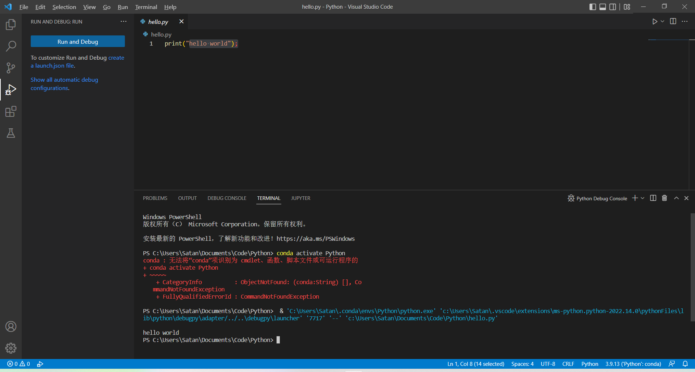
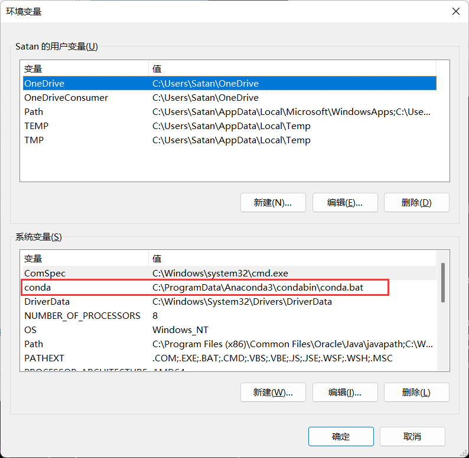
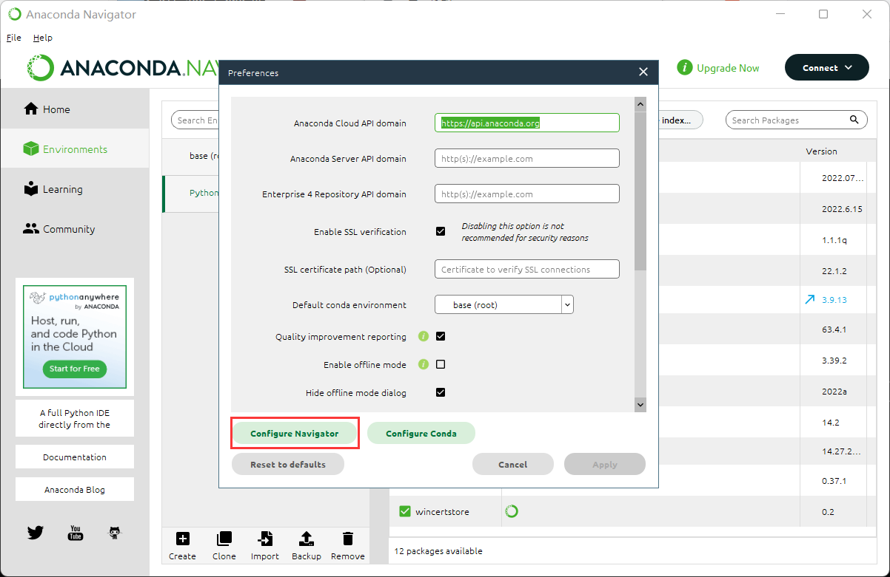
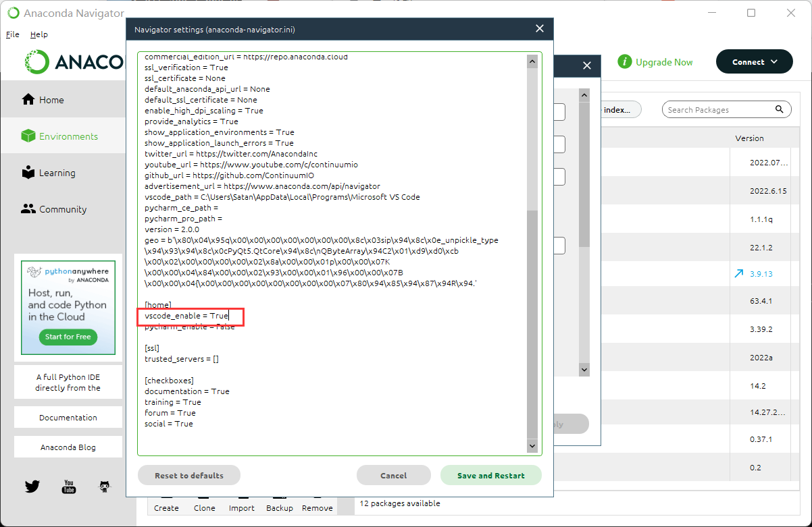
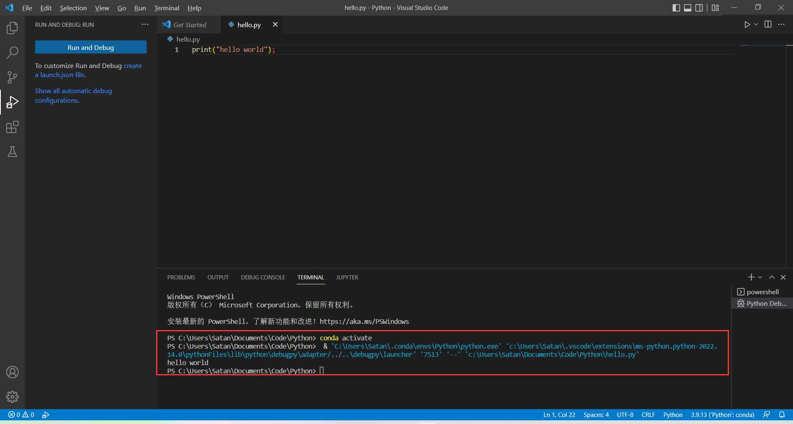

解决Anaconda关联VSCode使用conda运行Python报错
错误
刚安装好Anaconda之后创建好VS Code环境运行Python会报错,但是仍然是可以正常运行，强迫症想解决报错
PS C:\Users\Satan\Documents\Code\Python> conda activate Python
conda : 无法将“conda”项识别为 cmdlet、函数、脚本文件或可运行程序的
- conda activate Python
- ~~~~~
- CategoryInfo : ObjectNotFound: (conda:String) [], Co
- conda activate Python
- ~~~~~
- CategoryInfo : ObjectNotFound: (conda:String) [], Co
mmandNotFoundException + FullyQualifiedErrorId : CommandNotFoundException
PS C:\Users\Satan\Documents\Code\Python> & ‘C:\Users\Satan.conda\envs\Python\python.exe’ ‘c:\Users\Satan.vscode\extensions\ms-python.python-2022.14.0\pythonFiles\lib\python\debugpy\adapter/../..\debugpy\launcher’ ‘7717’ ‘–’ ‘c:\Users\Satan\Documents\Code\Python\hello.py’
hello world

解决
首先要确保自己的Windows环境变量中有conda

然后打开Anaconda，找到Preference设置，更改配置文件

将VSCode支持设置为True，保存并重启

验证
打开VSCode运行Python文件已经不报错
